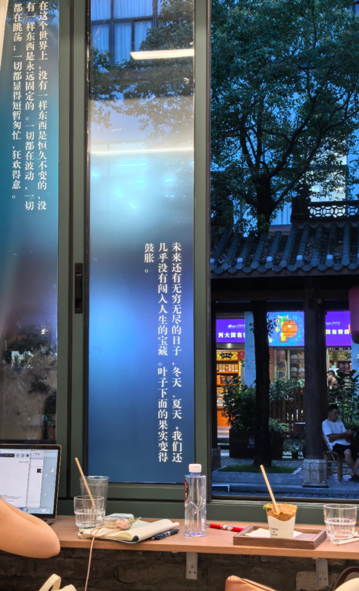

周而复始 | 2025W25 语人为善
【周而复始】板块是一个新的板块，旨在记录每周的生活与思考，代替之前的【阅读】模块；一个月发一次的频率已不适合我的当下的生活节奏和需要，与之相比，每周整理一次，更能督促我记录和总结，并且更可能产生输出；所以我将尝试以类似周报的形式记录，一周是一年的2%，希望自己能痛改前非，好好生活的同时，也认真记录。
本篇是对 2025年的第22周（2025-06-16~2025-06-22 ）生活的记录与思考。
语人为善
每次夜跑都会路过西西弗书店，我总会忍不进去逛逛，时间还早的话会粗看基本书，前阵子看到了《非暴力沟通》，看了第一章觉得挺有意思的，便在微信读书把它加入了 书单；往后中午我总忍不住点开它来看，恰巧我同时在看《孩子，把你的手给我》，发现这两本书的内容核心内容非常相似，也一改我之前对工具书的看法。从前我以为，工具书不过是技巧，人与人的沟通最重要的是真诚，虽说也深知语言的杀伤力，但总觉得自己能幸免，也没那么容易被伤害。随着与学龄前的小孩沟通越来越多我发现，真诚总不是一定会被感受到的，也不总是起作用的，技巧也十分重要。海姆在书中举了个例子:
我们相信，只有心理不正常的父母才会做出伤害孩子的反应。但是，不幸的是，即使是那些爱孩子的、为了孩子好的父母也会责备、羞辱、谴责、嘲笑、威胁、收买、惩罚孩子，给孩子定性，或者对孩子唠叨说教。
…
父母需要特别的方式跟孩子相处，跟孩子交谈。如果我们中的任何一个人躺在手术台上，在麻醉师把我们麻醉之前，外科医生走了进来，说：“在手术方面，我真的没有受过多少训练，但是我爱我的病人，我会利用常识来做手术。”这时你会有什么感觉？我们可能会惊慌失措，赶紧逃命去了。
不仅为人父母与孩子相处需要注意语言技巧，人与人之间有何尝不是。平时我总有说错话的时候，也有会错意的时候，如果总将此解释为“我不是这个意思，你误会了”、“他不是故意的”，有免去自己的责任的嫌疑，至少可以说这是偷懒的。如何明确地表达我们的善意、与他人建立连结，如何“语人为善”可能是毕生的功课。
读书笔记见《实践笔记——非暴力沟通》，笔记会持续更新，以记录笔者的实践与思考。

创作
对于本周的输出和输出，有什么创作吗？可以记录下来，可以是一个手工制品、一道菜、一首诗、一段文字，也可以是一篇读书笔记、思维导图；一段程序、脚本；
第二次做四神汤，食材配比比之前合理了写，茯苓只放了15g，加了一小块陈皮，味道清淡、平和，带有淡淡的药材香味和排骨本身的鲜味。
下周计划
下午晚上的温度太高、高温高湿的环境实在不适合训练，探索早上训练的可能。
小记
读书：《非暴力沟通》、《孩子，把你的手给我》
剧集：《灵笼》、《长安的荔枝》
学习：《Deep Dive into LLMs like ChatGPT——Andrej Karpathy》
运动：1小时有氧跑1次、5公里有氧跑1次，力量训练3次。